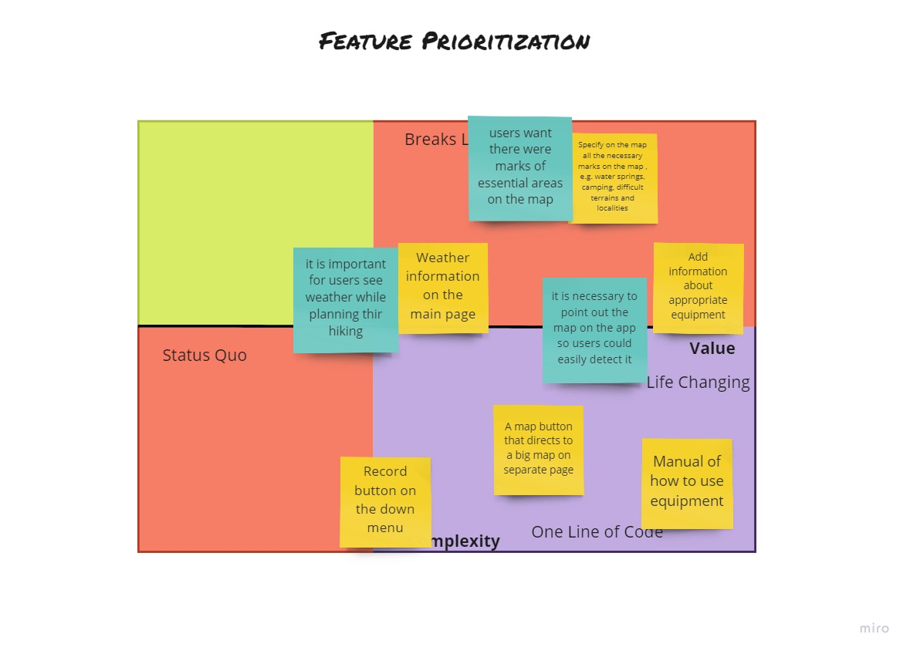
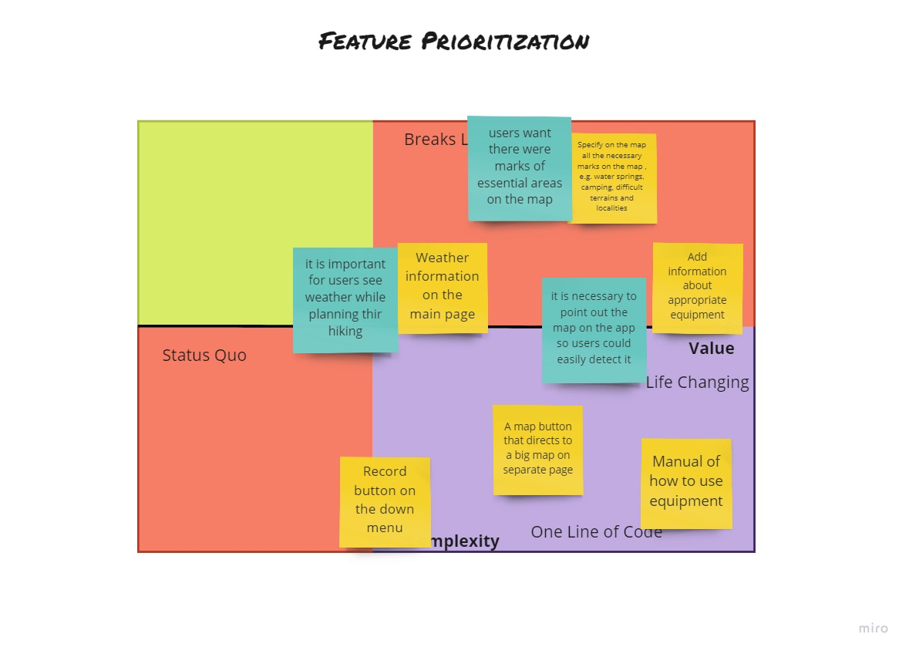

Challenge: "Build a mobile app for amateur hikers who go long-term hiking for leisure"
People like travelling. However, sometimes because of bad trip planning they undergo inconveniences that
get them frustrated and irritated. Subsequently this leads not to a great journey but to a really bad
experience.
The main idea of the current project was to make an app that would help people to plan their journey as
efficiently and quickly as possible.
On the initial stage of the designing process it was necessary to scope the topic, so it wouldn’t become
overwhelming and impossible to get done. Clear scope upfront will lead to better outcomes at the end of
the work. Working within the scope I could define the problem that is being solved, and the measures of
success. Also it helped me to determine target audience and the purpose of the app.
Throughout the designing I was following a design thinking approach (non-linear process) to make sure that my design decisions were supported by various deliverables and techniques that were used in every stage of the process.
Qualitative research was introduced as a semi-structured interview. There were four participants who
took part in the interview. The research was aimed at defining user’s behavior and needs and also to
determine their current pain points.The goal was to determine what opportunities may exist for creating
new digital product for planning hiking trips and how it is
different from non-digital planning.Some of the key research questions that have been asked are
following:
1.What is essential for amateur hikers when they are planning their hiking trip?
2.How do hikers currently plan and organize their trips?
3.What is user’s current pain point?
4.How do user’s feel about existing products?
The goal was to determine what opportunities may exist for creating new digital product for planning
hiking trips and how it is
different from non-digital planning.
Based on the research there were descovered the following findings:
After the research was conducted I started the process of Synthesis where I brought the research ideas together to form a fundamental understanding. This could help me to understand the problems that users are facing and to know why I am building this specific product. During this stage of ideation there were used some techniques and frameworks for getting initial visual concepts, prioritizing features, such as Affinity mapping, Crazy8, Value vs Complexity Quadrat. Also before starting ideate the features the insight statements were reframed and How Might We questions to turn those challenges into opportunities for design e.g. “How Might We provide more relevant information about the track and trip so hikers could more efficiently plan their journey”.
 

The process of prototyping was divided into two parts: Low-Fidelity Prototyping and High-Fidelity Prototyping. In both parts I used such instrument as Figma including its assets and plugins. Also the Atomic Design method helped me to put together the design system which I used for hi-fi prototyping. After the hi-fi prototype was created I prepared it for handoff by exporting Figma designs to Zeplin with the style guides and all the elements included.


Usability testing was one of the crucial parts of the design process. It was conducted remotely with the help of Usability guide. Five were involved in usability testing, they were supposed to follow the instructions and answer the questions. After competing usability test, some insights were discovered where the app is not entirely working well. I went through each session of Usability flow in Miro and mapped specific problems to areas where they were discovered. I noticed that users had problems with finding “map button” so I could draw my attention to where I should be addressing my design iteration.

As design is iterative process in the last step of the process it was important to review the project and look for issues and opportunities for improvement in accessibility and annotate the screens accordingly. This time I used Lookback platform for Usability Test. There were 10 participants who were asked to follow the provided instructions and give a feedback of their user flow. After the feedback was gathered some I made some amendments to make the design more usable.
●It took me 3 months to finish this end-to end process . On the first stage of investigation the
research was conducted where necessary data was gathered , I interviewed four people and discovered what
problems and pain points users have while preparing for hiking using apps, on the next stage of ideation
there were used some techniques for getting more ideas and prioritizing features . After that
low-fidelity prototype was made and the first usability test was conducted so I could see the
limitations of current design and improve it . When improvement was done I started to develop
high-fidelity prototype and after it the second usability test was done with the help of LookBack.
●Key activities of the project were Research, Affinity mapping building, feature
prioritizing, low-fidelity prototyping, high-fidelity prototyping , usability test, iterations, scope
defining and user flow providing.
● Users were confused by registering on the app
● 85%of users preferred solution A to solution B because of its improvements in usability
from the original design
● Key decision that was made is upgrading a map with all the useful marks that users wanted
to have on the app.
The final design solution was made according to the gathered data and usability tests.